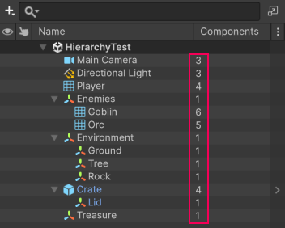
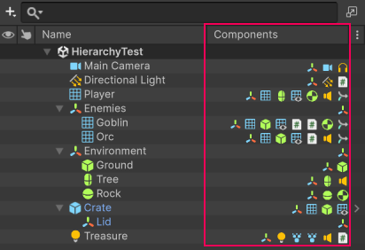

The Hierarchy window has built-in columns, such as Layer and Tag, that display information about each GameObject. To display your own information in the same way, add a custom column. For example, you can add a column that displays the components of each GameObject. You can then find the GameObjects that have a Rigidbody component or a script without opening their Inspector window individually.
A custom column uses two descriptors. You define each descriptor in a static method in an Editor script, and mark the method with an attribute:
HierarchyViewColumnDescriptor class, defines the column itself, such as its header text and default width.HierarchyViewCellDescriptor class, defines what the column displays in each cell for one type of item, such as GameObjects.The Unity Editor finds the methods with these attributes and calls them when it creates the Hierarchy window. You don’t need to subscribe to an event.
Before you begin, complete the following steps:
Assets/Editor/HierarchyExtensions folder. The scripts on this page load their style sheets from this folder.The following script adds a Components column that displays the number of components on each GameObject.
To create the Components column:
In the Assets/Editor/HierarchyExtensions folder, right-click and select Create > Scripting > Empty C# Script.
Name the script ComponentsColumn.cs.
Open the script and replace its contents with the following code:
using Unity.Hierarchy;
using Unity.Hierarchy.Editor;
using UnityEngine;
using UnityEngine.UIElements;
public static class ComponentsColumn
{
const string k_ColumnId = "Example/Components";
// Describes the column: its header text, tooltip, position, and width.
[HierarchyViewColumnDescriptor(k_ColumnId)]
static void CreateColumnDescriptor(HierarchyViewColumnDescriptor descriptor)
{
descriptor.Title = "Components";
descriptor.Tooltip = "Components on the GameObject";
descriptor.DefaultPriority = 1000;
descriptor.DefaultWidth = 100;
}
// Describes the cells that the column displays for GameObjects.
[HierarchyViewCellDescriptor(k_ColumnId, typeof(HierarchyGameObjectHandler))]
static void CreateGameObjectCellDescriptor(HierarchyViewCellDescriptor descriptor)
{
// Runs each time a cell displays a GameObject.
descriptor.BindCell = cell =>
{
// The attribute registers this descriptor for HierarchyGameObjectHandler only,
// so the handler of every cell is a HierarchyGameObjectHandler.
HierarchyGameObjectHandler handler = (HierarchyGameObjectHandler)cell.Handler;
GameObject gameObject = handler.GetGameObject(cell.Node);
Component[] components = gameObject.GetComponents<Component>();
cell.Add(new Label(components.Length.ToString()));
// Display the cell content on every row, not only on selected or hovered rows.
cell.IsDefaultValue = false;
};
}
}
The script contains the following parts:
k_ColumnId identifies the column. The column descriptor and the cell descriptor use the same identifier, so the Editor knows that the cells belong to the column. Use an identifier that’s unique to your project, such as one that starts with the name of your project or team.HierarchyViewColumnDescriptorAttribute attribute registers CreateColumnDescriptor, which sets the header text, tooltip, and default width of the column. DefaultPriority sets the initial order of the column among the other columns.HierarchyViewCellDescriptorAttribute attribute registers CreateGameObjectCellDescriptor for items that HierarchyGameObjectHandler manages, which are GameObjects. Other items, such as scenes, display an empty cell.BindCell runs each time a cell displays a GameObject. It adds a label with the number of components to the cell. By default, the Editor removes the contents of a cell when the cell stops displaying an item, so you don’t need to remove the label yourself.IsDefaultValue to false in BindCell.Save the script.
After the Editor compiles the script, the Components column is available, but the Hierarchy window doesn’t display it yet.
The Hierarchy window lists custom columns with the built-in columns.
To display the Components column:
The Components column displays the number of components on each GameObject. You can move, resize, and hide the column in the same way as the built-in columns. For more information, refer to Configure the Hierarchy window.

A cell can contain any visual elementA node of a visual tree that instantiates or derives from the C# VisualElement class. You can style the look, define the behaviour, and display it on screen as part of the UI. More info
See in Glossary. The following script replaces the number of components with the icon of each component.
To display the icon of each component:
In the Assets/Editor/HierarchyExtensions folder, right-click and select Create > UI Toolkit > Style Sheet (USS).
Name the style sheet ComponentsColumn.uss.
Open the style sheet and replace its contents with the following code:
.component-icon-row {
justify-content: flex-end;
}
.component-icon {
width: 14px;
height: 14px;
margin-left: 3px;
margin-top: 3px;
}
Replace the contents of ComponentsColumn.cs with the following code:
using Unity.Hierarchy;
using Unity.Hierarchy.Editor;
using Unity.Scripting.LifecycleManagement;
using UnityEditor;
using UnityEngine;
using UnityEngine.Pool;
using UnityEngine.UIElements;
public static class ComponentsColumn
{
const string k_ColumnId = "Example/Components";
const string k_StyleSheetPath = "Assets/Editor/HierarchyExtensions/ComponentsColumn.uss";
const string k_IconRowUssClassName = "component-icon-row";
const string k_ComponentIconUssClassName = "component-icon";
// Reuses Image elements instead of creating new ones each time a cell is bound.
// The pool is safe to keep between Play mode sessions, so it doesn't need to be reset.
[NoAutoStaticsCleanup]
static readonly ObjectPool<Image> s_ImagePool = new ObjectPool<Image>(() => new Image());
[InitializeOnLoadMethod]
static void Initialize()
{
HierarchyWindow.BindView += OnBindView;
}
static void OnBindView(HierarchyWindow window, HierarchyView view)
{
StyleSheet styleSheet = AssetDatabase.LoadAssetAtPath<StyleSheet>(k_StyleSheetPath);
view.styleSheets.Add(styleSheet);
}
[HierarchyViewColumnDescriptor(k_ColumnId)]
static void CreateColumnDescriptor(HierarchyViewColumnDescriptor descriptor)
{
descriptor.Title = "Components";
descriptor.Tooltip = "Components on the GameObject";
descriptor.DefaultPriority = 1000;
descriptor.DefaultWidth = 100;
}
[HierarchyViewCellDescriptor(k_ColumnId, typeof(HierarchyGameObjectHandler))]
static void CreateGameObjectCellDescriptor(HierarchyViewCellDescriptor descriptor)
{
descriptor.BindCell = cell =>
{
HierarchyGameObjectHandler handler = (HierarchyGameObjectHandler)cell.Handler;
GameObject gameObject = handler.GetGameObject(cell.Node);
Component[] components = gameObject.GetComponents<Component>();
// The Editor clears the cell each time it stops displaying an item,
// so create a new row of icons each time the cell is bound.
VisualElement iconRow = new VisualElement();
iconRow.AddToClassList(k_IconRowUssClassName);
iconRow.style.flexDirection = FlexDirection.Row;
cell.Add(iconRow);
// Add the icon of each component.
foreach (Component component in components)
{
Texture2D texture = AssetPreview.GetMiniThumbnail(component);
if (texture == null)
{
continue;
}
Image icon = s_ImagePool.Get();
icon.AddToClassList(k_ComponentIconUssClassName);
icon.image = texture;
iconRow.Add(icon);
}
cell.IsDefaultValue = false;
};
// Runs each time a cell stops displaying a GameObject, before the Editor clears the cell.
descriptor.UnbindCell = cell =>
{
// Return the icons to the pool so that the next bind can reuse them.
cell.Query<Image>(className: k_ComponentIconUssClassName).ForEach(icon =>
{
icon.RemoveFromHierarchy();
s_ImagePool.Release(icon);
});
};
}
}
The script contains the following parts:
OnBindView adds the style sheet to the view, which also applies to the cells of the column.BindCell gets the icon of each component with AssetPreview.GetMiniThumbnail and adds an Image element for each icon to a row of icons.Image elements each time, BindCell gets them from an ObjectPool.UnbindCell runs each time a cell stops displaying a GameObject, before the Editor removes the contents of the cell. It returns the Image elements to the pool so that the next bind can reuse them.NoAutoStaticsCleanup attribute indicates that the pool doesn’t need to be reset when you enter Play mode. Without the attribute, the Editor logs warnings for the static field in projects that disable domain reloading. For more information, refer to Domain reloading.Save the script.
The Components column displays an icon for each component on each GameObject. If the column is too narrow to display all the icons, drag the edge of the column header to make it wider.
